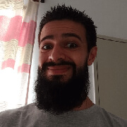
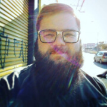

12 de Abril de 2018 às 19:00 horas - Campus Boituva
Segundo meetup de desenvolvimento de software que acontece no IFSP de Boituva, o evento será focado em pessoas que estão iniciando na carreira de desenvolvimento e que gostariam de se sentir mais inseridas na comunidade de software e no mercado de trabalho.
Marcela Godoy é desenvolvedora Back-end com graduação em Sistemas de Informação, já passou por várias áreas da TI, iniciando como Game Tester, pegando atalho pelo Design/UX e finalmente caindo no mundo do Desenvolvimento onde se apaixonou e não quis mais sair.
Caio Carrara
Back-end Developer at Olist
Caio Carra é desenvolvedor de software com 10 anos de experiência. Graduado pela FATEC Sorocaba tem passagem por uma dezena de empresas como Globo.com e ThoughtWorks. Trabalha com Python há 5 anos e atualmente é desenvolvedor com enfoque em liderança técnica.

Rafael Henrique
Back-end Developer at Olist
Rafael é apaixonado por software livre desde muito jovem, é bacharel em Ciência da Computação e aspirante a Mestre Yoda. Trabalha atualmente na Olist (tem vagas!) mas já passou por diversas empresas. Trabalha a mais de 10 anos com tecnologia e já atuou em diversas vertentes da computação em si.

Vitor Casadei
Software engineer at CESAR
Vitor é organizador do SorocabaJS, graduado e mestre em ciência da computação pela UFSCAR, tem uma grande experiência em tecnologia, conhece muito sobre visão computacional, JavaScript, UX e muitos outros assuntos.
Nossas palestras
19h20
Marcela Godoy
Carreira de desenvolvimento como back-end.
20h00
Caio Carrara
Do Python ao Infinito e Além!
20h40
SURPRISE
21h00
Rafael Henrique
Criando sua primeira aplicação Web em Python.
21h40
Vitor Casadei
Começando em desenvolvimento front-end.